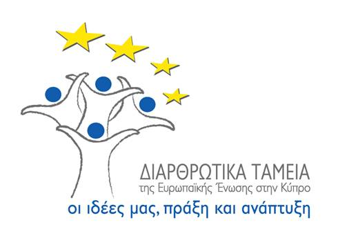
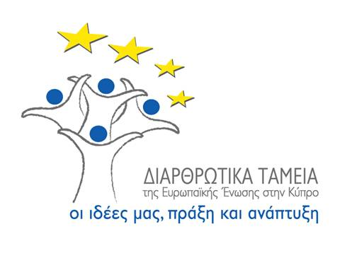

Grants
[1] “SEARCH FOR THE STANDARD MODEL HIGGS TO γγ DECAYS USING THE CMS DETECTOR AT LHC”
Cyprus Research Promotion Foundation (RPF), ΠΡΟΣΕΛΚΥΣΗ/ΝΕΟΣ/0311/04, 100,000 Euro, 2011-2013.
[2]“Search for neutral SM and MSSM Higgs bosons in the decay channel H/A/h → tautau”
Cyprus Research Promotion Foundation (RPF), Techn/ΘΕΠΙΣ/0609(ΒΕ), 140,000 Euro, 2010-2013 (Coordinator).
[3] " Upgrade of the existing High-Performance Linux Cluster for the experiment CMS "
Cyprus Research Promotion Foundation (RPF), ΑΝΑΒΑΘΜΙΣΗ/0609, 100,000 Euro, 2010-2013 (Coordinator).
[4] “Search for light neutral NMSSM higgs Bosons”
Cyprus Research Promotion Foundation (RPF), 120,000 Euro, 2008-2011 (Coordinator).
[5] “Studying nuclear matter under extreme conditions of high baryonic density and high temperature - The HADES and the CBM experiments at GSI Darmstadt, Germany”
A total amount of about 128,000 EURO was granted from the Research Committee of the University of Cyprus for three years 2005-2008.
[6] “Dilepton Analysis of 12C+12C Collisions at 1A GeV”
A total amount of about 97,000 euro was granted from the Cyprus Research Promotion Foundation (RPF) for two years 2006-2008 (Coordinator).
[7] “Upgrade of the existing High-Performance Linux Cluster for the experiments with heavy ions at International Research Centers of GSI and CERN”
A total amount of about 126,000 euro was granted from the Cyprus Research Promotion Foundation 2006-2010.
[8] “Dilepton Simulation and analysis of Ar + KCl Collisions at 1.8 A GeV with HADES”
A total amount of about 108,000 euro was granted from the Cyprus Research Promotion Foundation, 2005-2008, ΠΕΝΕΚ/ΕΝΙΣΧ/0505 (Coordinator).
[9] “HADES and secondary beams” EU-Funding program of guest researchers of GSI. A total of 30 person-days per year and additional travel and accommodation expenses have been granted (2004 - 2006).
Funding of Research passed only the first phase
-
“Nanotechnology Characterization Center in Cyprus”
Cyprus Research Promotion Foundation (RPF), Strategic Infrastructure Projects, has passed to the final phase (4,000,000).
 
